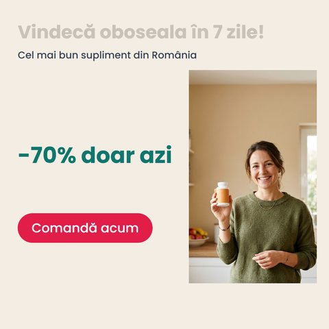

A
VitaBoost
Demo principal
- Probleme
- 6
- Scor
- 54 → 96


În rularea reală. Modelul poate semnala separat urgența sau tonul, deci scorul de pornire poate fi sub 54. După Fix all ajunge la același 96.
Varianta cu medic. Imaginea cu halat și ecuson declanșează o eroare pe Reg. (CE) 1924/2006 (recomandări de la medici, art. 12(c)). Ea rămâne până când omul schimbă poza, deci scorul nu ajunge la 96.